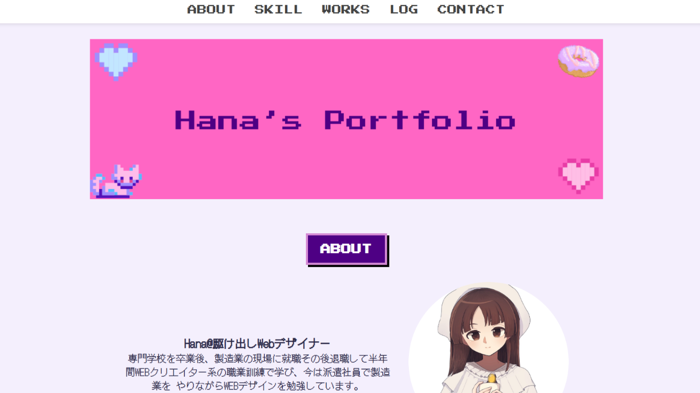
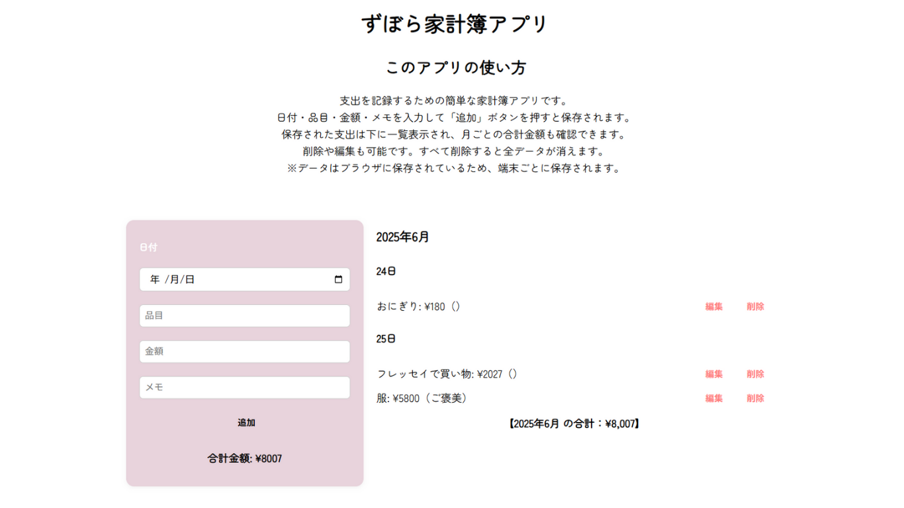
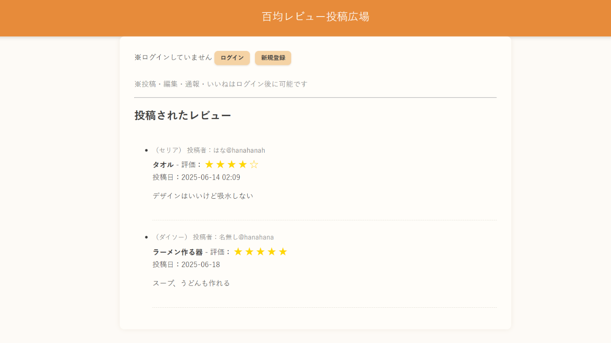

サマースチルさんのオフィシャルサイト（実案件）
ボカロPのオフィシャルサイト。利用規約の見やすさを重視し、夏の昼間をイメージしたカラー設計を行いました。
使用技術：HTML / CSS / JavaScript
▶ Webで開く

初めて作ったHTMLポートフォリオ
HTML・CSS・JavaScriptを使って制作。ハンバーガーメニューなどのアニメーションも導入し、初挑戦ながら丁寧に組み立てました。
使用技術：HTML / CSS / JavaScript
▶ Webで開く

ずぼらさんのための家計簿アプリ
支出のみを記録するシンプルな家計簿。編集・削除・保存機能を搭載し、localStorageで保存可能です。
使用技術：HTML / CSS / JavaScript
▶ Webで開く

百均レビュー投稿アプリ
Flaskを使ったレビュー投稿サイト。ログイン・いいね・編集・削除などのCRUD機能をJSONベースで実装しています。
使用技術：Python（Flask） / HTML / CSS / JavaScript
状況：開発中（ローカル環境で動作）